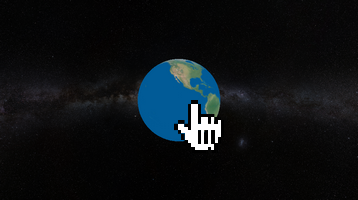
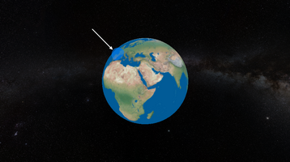
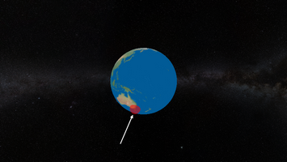
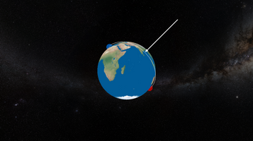

Be A Savior, l'application où vous pouvez sauver des vies ! Envoyez les ressources de la planète pour résoudre les crises humanitaires. Si votre stratégie fonctionne, vous pouvez faire un don et le répartir entre les différentes crises en temps réel !

Vous pouvez vous déplacer sur la planète Terre avec votre souris, cliquez et maintenez enfoncé tout en vous déplaçant pour tourner autour du globe.

Des ressource humanitaires apparaissent de temps en temps à la surface du globe, elles correspondent aux réserves de médicament ou aux dons envers le ONG lors d'évènement ou de campagne par exemple.

Des crises humanitaires apparaissent également ! Guerres civiles, épidémies, catastrophes naturelles, c'est à vous de trouver la meilleur stratégie pour résoudre ces problèmes.

Pour cela, tracez des liens entre les ressources et les crises humanitaires. Attention ! Certaines crises s'étendent plus rapidement que d'autres !